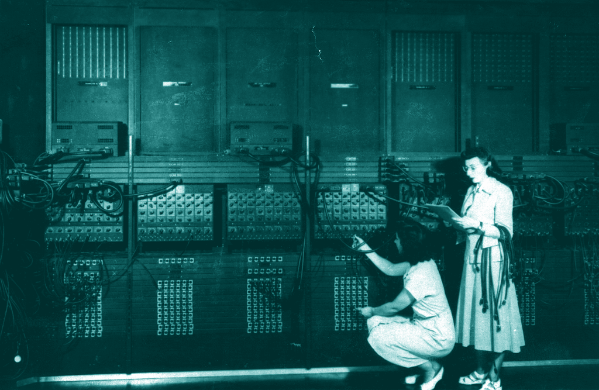

All power to the users,
one bright future for all.
An open project by the Userist Collective.

An open project by the Userist Collective.
With the advent of digital, everything changes. Work, intended as physical and mental effort to produce value, is slowly replaced by automation. Only human needs and desires remain the same, but freed from most physical constraints. Users live freely in a truly human age.
As tasks get automated and products generated, a simple gesture becomes the source of power. It's the digital gesture, such as a hand holding a device – the moment where human intention meets digital potential. Without it, no technology has meaning, and no product carries any value. Consumption, therefore, becomes far more relevant than production.

Humans are at their most powerful in the digital age. Today, there are better chances of a bright future for everyone than ever in history. However, digital control is unequally distrubuted across countries and societies, a hindrance to potential progress. That's why we believe it should be users right to own it, not be afraid of it nor of its consequences. As userocracy is put into place, benefits will equally unfold for everyone.

Loading articles...
Loading events...
Interested? Share your thoughts or step in and join us. All contact options are available here.
We speak English, French, Italian and Spanish
Martina (🇫🇷🇪🇸🇬🇧)
martina@baus.ec
martina.baus.ec
Renato (🇮🇹🇬🇧)
renatopisani@proton.me
+39 344 5041791
Telegram @UsersAreCool
Follow if you want simple, direct alerts and quick pointers back to this website.